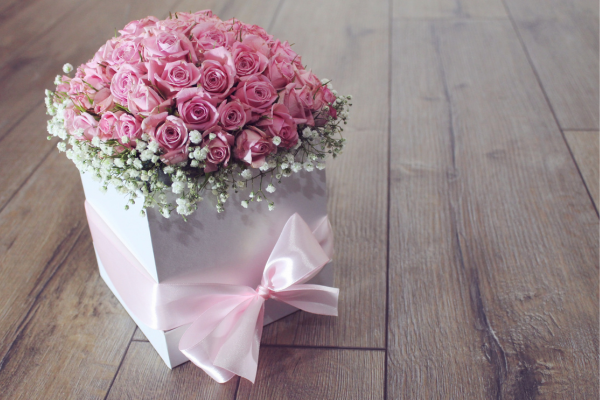
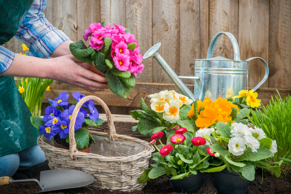
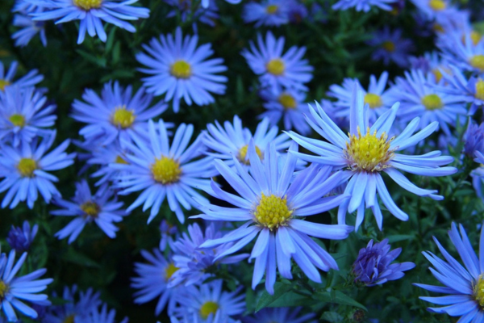
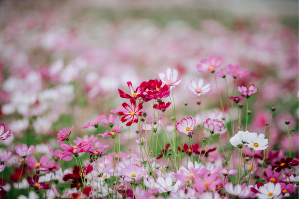
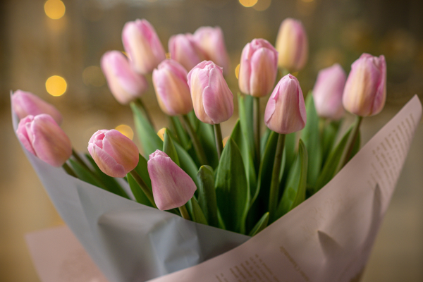

Hoa là món quà quý giá mà thiên nhiên ban tặng cho con người. Ngoài việc làm đẹp cho cuộc sống,
mỗi loài hoa còn mang trong mình ý nghĩa sâu sắc, giúp con người truyền đạt những thông điệp trong
tình yêu và cuộc sống. Tam Nhím sẽ giúp bạn khám phá ý nghĩa các loài hoa và cách chúng có thể truyền tải
những thông điệp đúng trong những dịp đặc biệt.
Ý nghĩa các loài hoa trong tình yêu
Các loài hoa đã lâu trở thành một cách thể hiện tình yêu và tình cảm đối với người khác. Mỗi loài hoa
mang ý nghĩa riêng, dưới đây là một số ý nghĩa phổ biến của một số loài hoa trong tình yêu:

- Hoa hồng: Hoa hồng được coi là biểu tượng của tình yêu và lãng mạn. Màu sắc của hoa hồng cũng có ý
nghĩa riêng, chẳng hạn như hoa hồng đỏ thể hiện tình yêu chân thành và đam mê, hoa hồng trắng thể hiện tình yêu trong sạch và tôn trọng.
- Hoa cẩm tú cầu: Hoa cẩm tú cầu thường được coi là biểu tượng của tình yêu vĩnh cửu và trung thành. Nó thể hiện tình yêu mạnh mẽ và sự đoàn kết.
- Hoa baby’s breath (hoa ngọc lan tây): Hoa baby’s breath thường được sử dụng như là hoa phụ trang trí trong bó hoa. Nó thể hiện sự trong trắng và thuần khiết trong tình yêu.
- Hoa hoa huệ: Hoa hoa huệ có nhiều màu sắc và mỗi màu có ý nghĩa khác nhau. Chẳng hạn, hoa huệ trắng thể hiện sự trong sáng và thuần khiết, hoa huệ hồng thể hiện sự ngọt ngào và lãng mạn.
- Hoa tulip: Hoa tulip có ý nghĩa của tình yêu chân thành và lòng tin. Màu sắc của hoa tulip cũng mang ý nghĩa riêng, chẳng hạn như tulip đỏ thể hiện tình yêu đích thực, tulip vàng thể hiện tình yêu hạnh phúc và tulip trắng thể hiện tình yêu thuần khiết.
Những loài hoa mang ý nghĩa tích cực
Có nhiều loài hoa mang ý nghĩa tích cực và biểu trưng cho các giá trị và cảm xúc tích cực trong cuộc sống. Dưới đây là một số loài hoa mang ý nghĩa tích cực:

- Hoa hướng dương: Hoa hướng dương biểu trưng cho sự lạc quan, năng lượng và sự phát triển. Nó thể hiện tinh thần vươn lên, tự tin và sự tự hào.
- Hoa sen: Hoa sen mang ý nghĩa của sự thanh tịnh và tinh khiết. Nó biểu trưng cho sự trường thọ, sự trưởng thành và sự giác ngộ.
- Hoa lily: Hoa lily tượng trưng cho sự tinh khiết, vẻ đẹp và sự quý phái. Nó còn biểu thị sự trong trắng, sự tươi mới và sự tinh tế.
- Hoa violet: Hoa violet mang ý nghĩa của sự khiêm tốn, sự yếu đuối và tình yêu thầm kín. Nó thể hiện sự tinh tế và sự nhạy cảm.
- Hoa phong lan: Hoa phong lan biểu trưng cho sự quý phái, sự kiêu hãnh và sự tinh tế. Nó còn biểu thị sự mạnh mẽ và sự độc lập.
- Hoa hồng trắng: Hoa hồng trắng thể hiện sự trong sáng, sự thuần khiết và sự tôn trọng. Nó biểu trưng cho tình yêu chân thành và tình yêu vô điều kiện.
- Hoa lan hồ điệp: Hoa lan hồ điệp mang ý nghĩa của sự quý phái, sự hiếm có và sự tinh tế. Nó thể hiện sự kiên nhẫn và sự kiên trì trong cuộc sống.
Những loài hoa mang ý nghĩa đau thương
Dưới đây là một số loài hoa mang ý nghĩa đau thương trong một số nền văn hóa:
- Hoa cúc chó (Aconitum): Loài hoa này mang ý nghĩa của cái chết, nguy hiểm và đau thương. Nó thường được coi là biểu tượng của sự đau khổ và nguy hiểm trong nhiều văn hóa.
- Hoa hồng đen (Rosa ‘Black Baccara’): Hoa hồng đen thường được coi là biểu tượng của sự chết, sự chia tay và sự buồn bã. Nó thường được sử dụng trong các dịp tang lễ và các bức tranh hoa tươi đại diện cho sự đau khổ và sự mất mát.

- Hoa lưỡi hổ (Gladiolus): Hoa lưỡi hổ có một số loài có gai sắc nhọn trên cành, tượng trưng cho đau đớn và khó khăn. Nó cũng có thể đại diện cho sự hy sinh và sự chiến đấu trong cuộc sống.
- Hoa cúc họa mi (Oenothera): Loài hoa này có một màu vàng rực rỡ, nhưng nó cũng được coi là một loài hoa đau thương. Nó thường được liên kết với sự chịu đựng trong khó khăn và sự buồn bã.
Loài hoa tượng trưng cho sự bình yên
Một số loài hoa thường được tượng trưng cho sự bình yên là:
- Hoa hướng dương (Sunflower): Hoa hướng dương thường biểu trưng cho niềm vui, năng lượng tích cực và sự bình yên. Hình dáng và màu sắc tươi sáng của hoa hướng dương thể hiện sự sống và hy vọng.
- Hoa oải hương (Lavender): Hoa oải hương thường được liên kết với sự thư thái, bình yên và tĩnh lặng. Mùi hương dịu nhẹ của oải hương có tác dụng thư giãn và giúp tạo ra không gian yên bình.

- Hoa huệ (Lily): Hoa huệ thường được coi là biểu tượng của sự thanh tao, tinh khiết và sự bình an. Với hình dáng trái tim và mùi hương dịu nhẹ, hoa huệ tạo ra một cảm giác bình yên và lãng mạn.
- Hoa anh đào (Cherry Blossom): Trong văn hóa Nhật Bản, hoa anh đào là biểu tượng của sự tinh khiết, sự đẹp đẽ và sự tưởng niệm. Khi hoa anh đào nở rộ, cảnh tượng tạo ra một không gian yên bình và mang đến sự cảm nhận về sự tạm giao và sự trân quý cuộc sống.
Ý nghĩa màu sắc của hoa
Màu sắc của hoa có ý nghĩa sâu sắc và mang thông điệp riêng trong tình yêu và cuộc sống. Dưới đây là ý nghĩa chung của một số màu sắc phổ biến của hoa:
- Màu đỏ: Màu đỏ thường biểu trưng cho tình yêu, đam mê, nhiệt huyết và sự quyến rũ. Hoa màu đỏ thường được sử dụng để thể hiện tình yêu đích thực và sự mãnh liệt của người tặng.
- Màu hồng: Màu hồng thường liên kết với tình yêu, sự ngọt ngào và sự nữ tính. Hoa màu hồng thường được sử dụng để diễn đạt tình yêu nhẹ nhàng, sự quan tâm và sự hoà hợp.

- Màu trắng: Màu trắng thường tượng trưng cho sự trong sáng, sự thuần khiết và sự thanh lịch. Hoa màu trắng thường được sử dụng để thể hiện tình yêu trong sạch, tình yêu vĩnh cửu và sự tôn trọng.
- Màu vàng: Màu vàng thường biểu thị sự tươi vui, niềm vui và sự giàu có. Hoa màu vàng thường được sử dụng để chúc mừng, diễn đạt sự hạnh phúc và tình cảm tốt đẹp.
- Màu xanh lá cây: Màu xanh lá cây thường liên kết với sự tươi mới, sự phát triển và sự hòa hợp với thiên nhiên. Hoa màu xanh lá cây thường mang đến sự thư thái, hy vọng và sự bình an.
- Màu tím: Màu tím thường biểu thị sự lãng mạn, sự tinh tế và sự sâu sắc. Hoa màu tím thường được sử dụng để thể hiện tình yêu đam mê, sự kính trọng và sự sáng tạo.